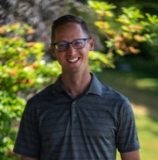
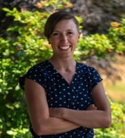

Kendra Mulligan
Kendra, a University of Alberta graduate since 1993, spent 18 years in Northern Alberta, including 5
years owning a physical therapy practice. She specializes in musculoskeletal conditions, holds
FCAMPT certification, and contributes to physiotherapy education. Active in mountain biking, she
co-owns Ascent Physiotherapy in Comox, BC, emphasizing evidence-based manual therapy and community
engagement since 2010.
Trish Leslie

Trish, a 2011 honours graduate from Queen Margaret University, Edinburgh, holds a Bachelor’s in
Physical Therapy. With diverse experience in orthopaedics, women’s health, geriatrics, neurology,
and sports physiotherapy, she has worked in private practice and acute care since 2012. Trish
emphasizes manual therapies, physiotherapy modalities, and exercise prescription. A certified
acupuncturist, she continues to expand her expertise through additional courses in orthopaedics and
women’s health. Originally from Ucluelet, she is content to be in the Comox Valley.
Jared Hromika

Jared, a 2014 UBC Masters of Physical Therapy graduate, relocated to the Comox Valley in 2015. Prior,
he gained diverse experience in Vancouver through locum positions in private practice orthopaedics.
Jared's treatment approach incorporates movement assessment, manual therapy, and exercise
prescription, supplemented by Neurokinetic Therapy training. He also offers bike fitting services,
drawing from his triathlon background and additional training in rider assessment and bike fit
during his UBC program. Beyond the clinic, Jared engages in activities like swimming, trail running,
softball, and hockey.
Shadi Fleifel

Shadi, a member of the Ascent Physiotherapy Team since 2018, holds a Kinesiology degree from Western
University and a Master's in Physiotherapy from Perth, Australia. With over a decade of experience,
he specializes in sports rehabilitation, treating injuries like neck and back pain, overuse
injuries, and musculoskeletal injuries. His extensive career includes working with premier rugby
clubs in Australia, James Bay rugby club, and Canada Rugby 7's team. Committed to ongoing education,
Shadi has completed various courses to enhance his physiotherapy skills. Outside work, he enjoys
family time and engages in diverse workouts like crossfit, swimming, biking, running, rugby,
basketball, and surfing.
Tona

Tona joined Ascent in 2004. She has a diploma in Medical Office Assistant and works in the clinic Monday's
to Friday's to assist you with any appointments and billing procedures.In her time away from the clinic Tona has been enjoying continuing her journey into fitness.
Tona and her husband enjoy camping, hiking and kayaking and hope to start travelling more and
explore the world! Tona enjoys spending time with her grandkids and family!
Chelsey de la Rey

Chelsey, a Trinity Western University graduate in Human Kinetics, earned her Masters of Physical
Therapy from the University of British Columbia in 2019. Returning to her roots in the Comox Valley,
she is dedicated to delivering personalized care tailored to clients' activities and goals. Her
approach encompasses hands-on manual therapy, exercise prescription, and education for
self-management. Chelsey holds Orthopedic Division Level 1 and explores further education in manual
therapy, pain science, and active rehabilitation. A sports enthusiast, she engaged in varsity
athletics, coached youth basketball and volleyball, and worked as a student athletic therapist and
strength coach with varsity athletes. Outside the clinic, Chelsey and her husband enjoy golf,
fishing, gym workouts, and competing in sports like curling, basketball, and volleyball.